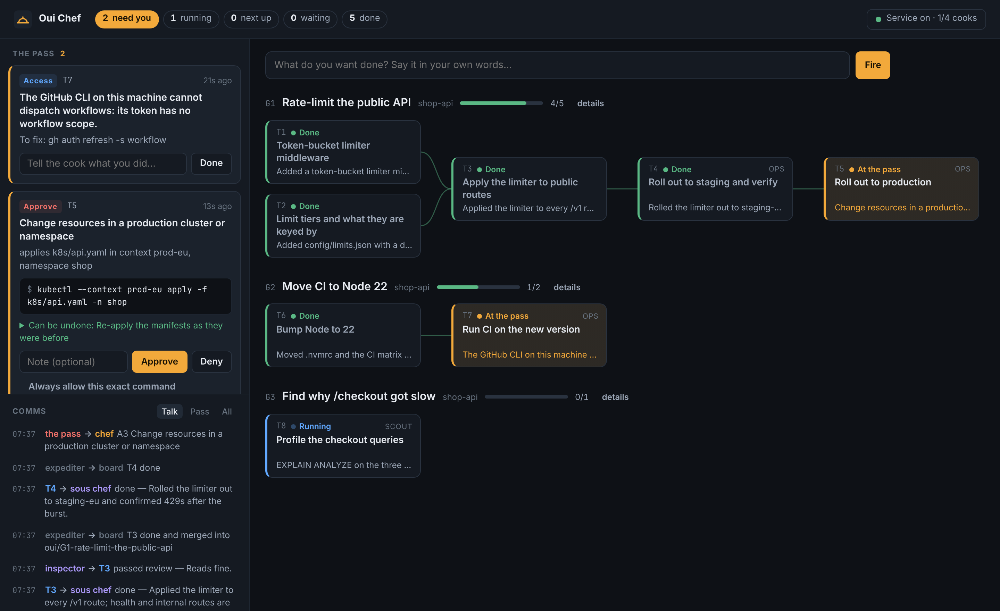

Token-bucket limiter middleware
Checked by the inspector, merged into the goal's branch.
You give the order. A sous chef breaks it into tickets, cooks carry them out at their own stations, and you are interrupted only for what is yours to decide.
Try itA small mock of one goal. Answer what is on the pass and watch the tickets move.
Checked by the inspector, merged into the goal's branch.
A question for you. It has no cook.
After T1 and T2.
After T3.
It sets what callers without a key get. The limiter itself is already built; only the tickets that need this answer are waiting.
You do not keep track of sessions. Tickets sit left to right in the order they must happen, and the board says which one starts next.

oui demo.Questions, access requests and held commands, sorted by how much work waits behind each one.
Each ticket is one cook's piece of work. The lines show what waits on what.
Who said what to whom: cooks, the sous chef, the inspector and the pass.
Everything mechanical is plain code. A model is used only where judgement is needed, each time from a few paragraphs, ending in one command.
Give goals, answer what only you can, approve what is risky.
Turns a goal into tickets and their order. Answers the cooks' questions that the goal already settles, and passes the rest up, reworded.
Works at its own station, a git worktree. Runs its own commands, commits, reports.
Checks each finished ticket against its brief before it merges. You can add inspectors of your own.
Fires tickets in order, delivers answers, runs your checks, merges, lands.
A hook on every tool call. It lets the call through, records it with an undo, holds it for you, or refuses it.
oui go "Add rate limiting to the public API"oui undo puts it back.$ oui status 1 need you · 1 running · 0 in review · 0 ready · 1 waiting · 1 done ON THE PASS A1 [decision] T2 Count limits per key or per IP? (holds up 2 tickets) options: Per API key | Per IP address (asker would pick: Per API key) G1 Rate-limit the public API [shop-api] 1/4 T1 done Token-bucket limiter middleware T2 at the pass Count limits per key or per IP? T3 waiting Apply the limiter to public routes · after T2 T4 waiting Roll out to production · after T3 $ oui answer A1 1 A1 answered: Per API key
Every command a cook runs crosses the pass first. It reads the command the way a careful person would: through pipes, &&, bash -c, sudo and ssh host '…'.
Goes through. Not recorded.
Goes through, and is recorded with the commands that put it back.
Stops at the pass. You see the command and how it would be undone.
Refused.
The pass is a seatbelt, not a sandbox. It catches what an eager agent does in plain sight. It cannot see inside a script it has not read.
How a goal is talked through, how work is cut into tickets and what a reviewer looks for are four plain text files. Copy one, change it, and the next conversation uses it. Nothing restarts.
For one standing preference you do not need a file: oui remember "always squash-merge".
You need Node 20 or newer, git, and Claude Code logged in. There are no dependencies to install.
oui demo starts a throwaway kitchen: a scratch repository, stand-in cooks and a fake kubectl that only prints. The getting started guide goes from there to your first real goal.
$ git clone https://github.com/alakiani/oui.git $ cd oui $ npm link # puts oui on your PATH $ oui demo # open the address it prints
Oui Chef is young: version 0.2, MIT licensed. The README keeps the full list.
kubectl, helm and gh were stand-ins.